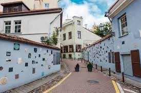

Literatų gatvė
 Literatų gatvė – viena seniausių gatvių Vilniaus senamiestyje, žinoma dėl sienų, papuoštų meno kūriniais, susijusiais su rašytojais ir poetais. Gatvė gavo savo dabartinį pavadinimą tik XX a. pradžioje dėl joje įsikūrusių spaustuvių, knygynų bei antikvariatų. Dar viena versija dėl Literatų gatvės pavadinimo kilmės yra susijusi su rašytoju Adomu Mickevičiumi. Šioje gatvėje, keturių aukštų namo palėpėje, jis nuomojosi butą. Tiesa, šiuo metu gatvelė žavi ne tik tuo, kad kadaise čia gyveno poetas, tačiau ir papildomais akcentais, kurie pradėjo puošti gatvę 2008 metais. Iniciatoriai – menininkai, kurie norėdami labiau sureikšminti literatūrinį tautos palikimą gatvę papuošė ir vis tebepuošia kūriniais, kurie yra susiję su literatais. Tam buvo atidengta visa siena su menininkų sukurtais medžio, stiklo, metalo dirbiniais. Žinoma, visus juos vienija literatūros simbolika. 2009 metų gegužės 28 dieną buvo atidengti pirmieji darbai. Kadangi projekte menininkai dalyvavo kaip savanoriai, tarp jų buvo daug jaunų kūrėjų, įamžinusių savo mėgstamus rašytojus. Rašytojai buvo pasirenkami laisvai, be išankstinio susitarimo, pagal „mėgstamas“, „žinomas“, „populiarus“ principą. Šiandien ant sienos kabo daugiau nei 200 dekoruotų keramikos, medžio, metalo ir stiklo plokštelių, skirtų literatams, tokiems kaip: Sigitas Geda, Kazys Binkis, Romenas Gari, Vytautas Kernagis, Janina Degutytė, Jonas Mekas, Jurga Ivanauskaitė, Antanas Škėma, Paulius Širvys, Vincas Mykolaitis – Putinas, Vytautė Žilinskaitė, Antanas Strazdas, Ieva Simonaitytė, Romualdas Granauskas, Maironis, Vanda Juknaitė, Oskaras Milašius, Česlovas Milošas, Kristina Sabaliauskaitė, Žemaitė, Tomas Venclova ir daugelis kitų.
"Literatų gatvė"
Prieš lietuvių kalbos abitūros egzaminą, menu, su klasiokais literatų gatvėje dūros prisirūkę ir po pedesioką padarę iš baimės, kol mąstėm temas, kurios gal ir gali būti nuleistos – iškąskit, laisvą renkuosi, pro šalį štai jau trečią dešimtmetį teka ir užtikrina tvirtą trajaką talentas, kad ir ne ovič bet mane mažutėlį įpieš gal gatvėje literatų, gdzie mieszkal Mickiewicz I Jakimowicz Aidas Marčėnas
Galerija